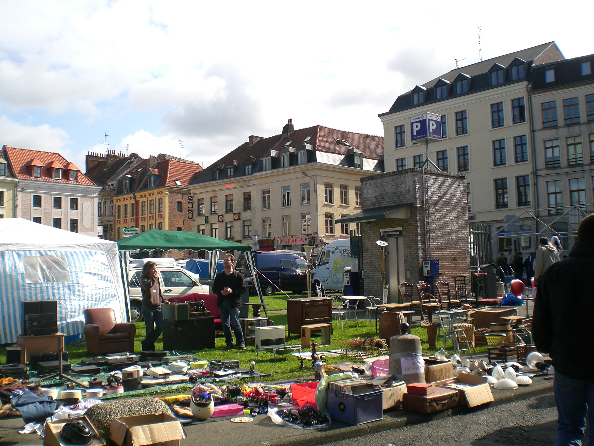

CityLoop Quest Lille


Lille possède une culture de la rue, de la foule et du rendez-vous populaire. La Braderie en est l’exemple le plus célèbre : chaque début septembre, la ville se transforme en immense marché à ciel ouvert. On y chine, on marche, on mange des moules-frites, on retrouve des amis et l’on accepte volontiers que la ville soit un peu renversée pendant quelques jours. Cette tradition, souvent présentée comme l’une des plus grandes braderies d’Europe, résume bien le tempérament lillois : commerçant, festif et chaleureux.

Les traditions lilloises ne se limitent pourtant pas à cet événement. Les marchés, en particulier Wazemmes, jouent un rôle quotidien dans l’identité locale. On y entend plusieurs langues, on y croise des produits du Nord, des épices, des fleurs, des fromages, des tissus et des conversations qui font partie du spectacle. Pour comprendre Lille, il faut accepter que la culture locale se vive autant sur une place de marché que dans un musée.

La ville aime aussi les grands rassemblements culturels. Lille 3000, héritier de l’élan donné par Lille Capitale européenne de la culture en 2004, a installé dans l’espace public une manière très reconnaissable de mêler art contemporain, défilés, installations, expositions et fête urbaine. Cette dimension explique la présence régulière de grandes structures colorées, de parcours artistiques et de thèmes internationaux dans la métropole.
Les fêtes étudiantes, les concerts, les rencontres sportives, les expositions du Tri Postal, les spectacles de l’Opéra et les événements dans les quartiers donnent à Lille une énergie qui varie selon la saison. La tradition n’y est pas uniquement nostalgique : elle se réinvente, emprunte aux cultures voisines et s’adapte à une population jeune. Cette capacité à faire cohabiter mémoire populaire et création contemporaine est l’une des forces de la ville.

Pendant votre visite, observez les signes de cette sociabilité : terrasses remplies dès qu’un rayon de soleil apparaît, files devant les friteries, librairies animées, affiches de concerts, marchés de quartier, façades décorées lors des grands événements. Lille se comprend avec les yeux, mais aussi avec l’oreille et l’ambiance. CLQ vous invite à repérer ces moments où le patrimoine cesse d’être un décor pour redevenir un lieu de vie.
Ce qui frappe à Lille, c’est que la fête n’est jamais totalement séparée de la ville ordinaire. La Braderie utilise les rues, Wazemmes utilise son marché, Lille 3000 utilise les places, les gares et les façades. Les événements transforment le décor sans le rendre méconnaissable. Ils révèlent au contraire la capacité lilloise à occuper l’espace public, à mélanger générations et visiteurs, et à faire d’une habitude locale une expérience collective. La force de ces traditions tient aussi à leur capacité d’absorber les visiteurs sans perdre leur accent local. La Braderie attire des foules immenses, mais elle garde le goût du trottoir, de la négociation, de l’objet trouvé et du repas partagé. Wazemmes accueille des habitants de longue date, des étudiants, des familles, des curieux, et conserve une intensité sonore qui ne se fabrique pas artificiellement. Lille 3000, de son côté, a montré que l’événement culturel pouvait sortir des musées pour occuper les rues, les façades et les lieux de passage. Ces traditions ne sont pas des cartes postales : elles demandent du mouvement, de la patience, parfois de la foule, souvent de l’humour. Elles rappellent que Lille est une ville où l’espace public sert encore à se rencontrer, à discuter, à manger debout, à écouter, à marchander et à transformer une journée ordinaire en rendez-vous collectif. Cette dimension populaire rend les événements lillois très accessibles : on peut y participer sans tout connaître à l’avance. Il suffit d’entrer dans le mouvement, d’observer les codes, de suivre les odeurs, les conversations et les déplacements de foule. La tradition devient alors une expérience directe plutôt qu’un simple sujet d’explication.